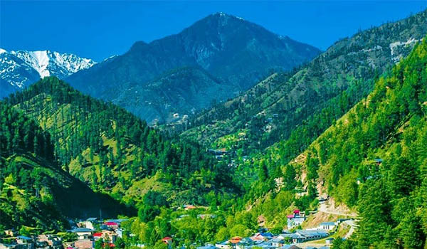
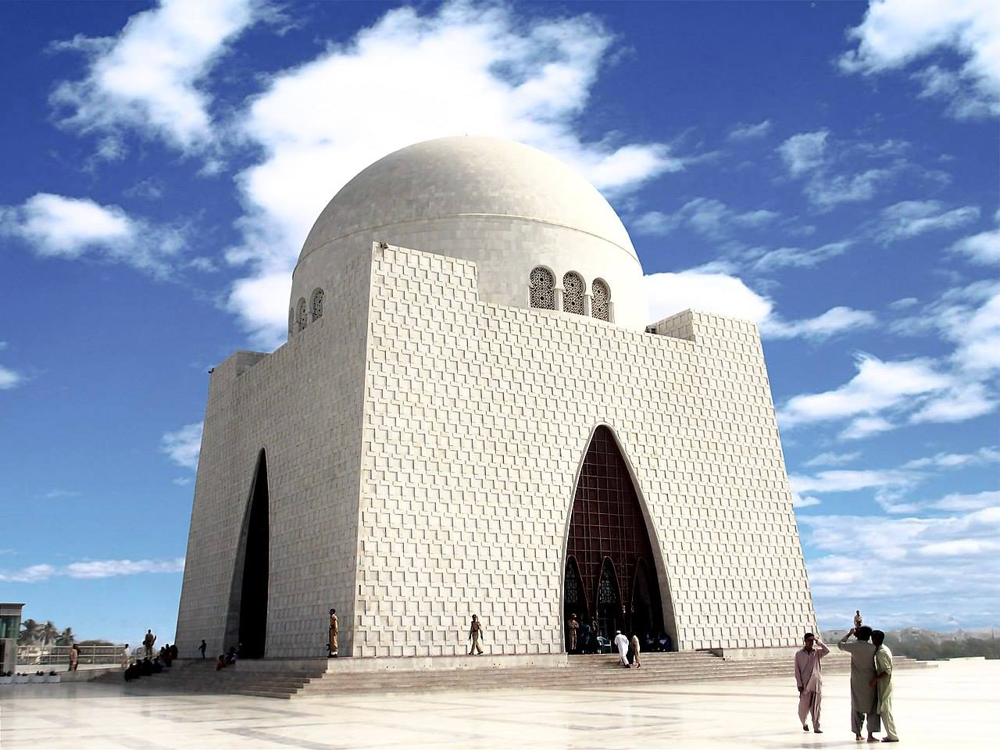
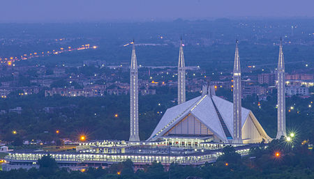
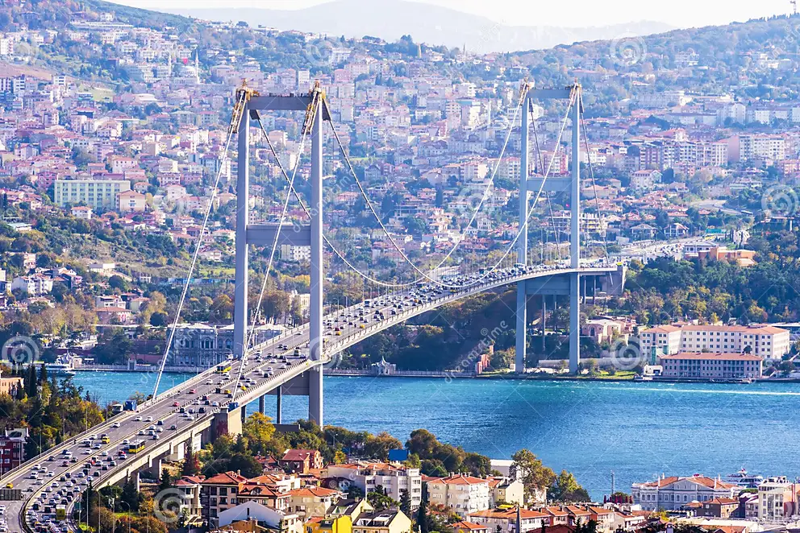

Travel with us
Welcome to Travel Guide!
At Travel Guide, we work as a team of five, collectively. We believe that travel is not just
about reaching a destination, but about the experiences that shape us along the way. Founded
in 2022, our mission is to provide you with the best of facilities to travel around the globe
and the best of locations as well, with amazing travel experiences. We are always thriving and
looking forward to explore the world with confidence and curiosity.
Our Story:
Being the travel guides, we first discovered ourselves by visiting various different places
that how a tour goes, what are the things to look for to make it interesting and what to do when
you go to a specific country. Our teammates have been to many places before and have had very
nice experiences as well as bad ones too, but from all those tours, they have learnt a lot,
especially what are the mistakes that shouldn'tbe done.
Tour of Swat:

Our team-member, Ali went on a tour to Swat. Ali's tour of Swat was a mesmerizing experience filled with natural beauty and rich cultural heritage.
He marveled at the lush green valleys, pristine rivers, and towering mountains that painted the landscape.
Exploring the ancient ruins of Buddhist stupas, he gained insight into the region's historical significance.
The vibrant local markets offered a taste of traditional handicrafts and delicious cuisine, where he savored
mouthwatering dishes like chapli kebabs and sweet saffron rice. Hiking through the breathtaking Malam Jabba,
Ali found tranquility in the serene surroundings, leaving with unforgettable memories and a deeper appreciation
for Swat's enchanting charm.
Our team member, Rabbia had been to Naran, Kaghan and Kashmir. Rabbia's visit was a breathtaking journey through
some of Pakistan's most stunning landscapes. In Naran, she was captivated by the shimmering waters of Lake
Saif-ul-Malook, surrounded by majestic mountains that reflected on its surface. The lush greenery of Kaghan Valley
offered her picturesque hiking trails and serene picnic spots, where she breathed in the fresh mountain air.
Continuing her adventure to Kashmir, Rabbia was enchanted by the vibrant gardens of Srinagar and the tranquil
beauty of Dal Lake, where she enjoyed a traditional shikara ride. Each destination filled her with awe, leaving
her with a profound sense of peace and an appreciation for the natural wonders of this region.

Ahsan, our very heartwealthy team member had been to Karachi, the biggest city of the country. Ahsan's visit
to Karachi was a vibrant exploration of Pakistan's bustling metropolis, where modernity meets rich history.
He wandered through the lively streets of Saddar, soaking in the sights and sounds of the city, from the iconic
Quaid-e-Azam's Mausoleum to the colorful stalls of Zainab Market. Indulging in Karachi's famous street food,
he relished spicy biryani and crispy samosas, savoring every bite. Ahsan also took a moment to unwind at Clifton
Beach, where the soothing sound of waves provided a perfect backdrop for sunset views. His trip was a whirlwind
of culture, cuisine, and unforgettable experiences, leaving him with a newfound appreciation for the city's
dynamic spirit.

Kamran, our team leader had a visit to the city of lights, Islamabad! Kamran's visit to Islamabad was a refreshing escape
into the capital's blend of nature and modernity. He began his journey at the majestic Faisal Mosque, marveling at its unique
architecture against the backdrop of the Margalla Hills. Strolling through the serene trails of Shakarparian Park, he enjoyed
panoramic views of the city, taking in the lush greenery that surrounded him. A visit to the Pakistan Monument added a touch of
history to his trip, where he learned about the country's cultural heritage. In the evening, Kamran explored the bustling streets
of Centaurus Mall, savoring local delicacies and shopping for souvenirs. His time in Islamabad left him with lasting
memories of tranquility and urban charm.
All of these tours were within the country. No doubt these places are beautiful and all the visits were so captivating, but alongwith the tours within the country, we have also decided now that the entire world should be visited and explored. So, in the light of this, our team member, Ziyan, in 2023, alongwith a small team went to the country of Turkey, where he had an amazing experience and a successful visit.

Ziyan's visit to Turkey was an unforgettable adventure that combined rich history, stunning landscapes, and vibrant culture. Starting
in Istanbul, he was awed by the grandeur of the Hagia Sophia and the intricate beauty of the Blue Mosque, immersing himself in the
city's fascinating blend of East and West. Strolling through the bustling Grand Bazaar, he indulged in delicious baklava and traditional
Turkish tea while shopping for unique souvenirs. Venturing to Cappadocia, Ziyan experienced the magic of hot air ballooning at sunrise,
floating above fairy chimneys and ancient cave dwellings. His journey also took him to the turquoise waters of the Mediterranean coast
in Antalya, where he relaxed on pristine beaches. Each moment of his trip was filled with wonder, leaving Ziyan with a deep appreciation
for Turkey's enchanting allure.
In the present and ahead, we are now planning to expand our network to the entire world and we are ready to announce world tours to Spain,
Venice, France and Switzerland. We are planning to even further increase our offers so that people can enjoy their trip to their favourite
places with the best of facilities, at cheap rates.
If you want to contact us to get the further information about our packages, tour offers, timings and charges, you can contact us and register
as a client by visiting Contact Us.
:)
Safe travels,
The Travel Guide Team.